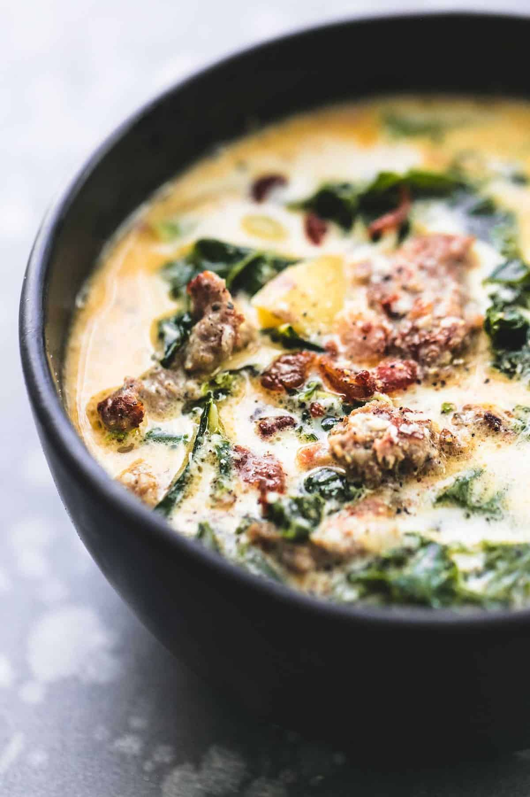
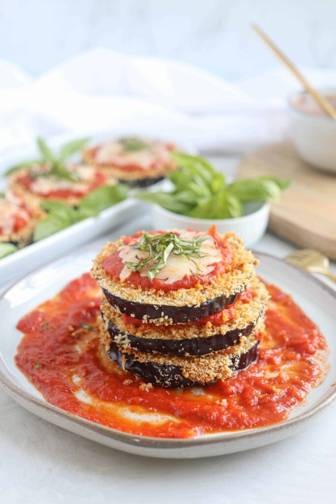

The Cookbook of Rhew
Easy Olive Garden Zuppa Toscana Soup
Cook Time: 30 Mins.
Print Recipe
Servings: 4
Jump to recipe

This Easy Olive Garden Zuppa Toscana Soup is a super quick and simple
copycat recipe with rich, creamy flavor you can’t resist!
Ingredients
- 1 pound spicy Italian ground sausage
- 1 tablespoon minced garlic
- 6 cups chicken broth
- 2 cups water
- 4-5 yellow potatoes - cut into 1-inch pieces
- 3 teaspoons salt
- 2 cups heavy cream
- 4 cups chopped kale
Instructions
-
In a large pot saute sausage 5-6 minutes until browned. Use a
slotted spoon to transfer sausage to a plate and set aside.
-
In the same pot, add butter and saute onions over medium heat until
translucent. Add garlic and saute for another minute until fragrant.
-
Add chicken broth, water, potatoes, salt, and pepper and bring to a boil.
Boil until potatoes are tender.
-
Stir in kale, and heavy cream. Add sausage.
Taste and add salt and pepper if needed.
-
Serve garnished with grated
parmesan cheese and/or bacon if desired.
Eggplant parmesan
Cook Time: 30 Mins.
Print Recipe
Servings: 4
Jump to Recipe

The classic combination of cheesy, herb-infused tomato sauce and crisp,
oven-baked eggplant never gets old.
This easy eggplant Parmesan recipe
gets high marks in ease and flavor from our community of home cooks.
Use straightforward pantry ingredients to create Italian-inspired
magic with this top-rated recipe.
Ingredients
- 3 large eggplant, peeled and thinly sliced
- 2 large eggs, beaten
- 4 cups Italian seasoned bread crumbs
- 6 cups spaghetti sauce, divided
- 1 (16 ounce) package mozzarella cheese, shredded and divided
- ½ cup grated Parmesan cheese, divided
- ½ teaspoon dried basil
Instructions
- Preheat the oven to 350 degrees F (175 degrees C).
- Dip eggplant slices in beaten egg, then in bread crumbs to coat.
Place in a single layer on a baking sheet.
- Bake in the preheated oven for 5 minutes. Flip and bake for 5 more minutes.
- Spread spaghetti sauce to cover the bottom of a 9x13-inch baking
dish. Place a layer of eggplant slices in the sauce. Sprinkle
with mozzarella and Parmesan cheeses.
-
Repeat layers with remaining sauce, eggplant, and cheese, ending
with a cheese layer. Sprinkle basil on top.
-
Bake in the preheated oven until golden brown, about 35 minutes.
- Enjoy!
Tiramisu
Cook Time: 30 Mins.
Print Recipe
Servings: 4
Jump to recipe
This delicious and unbelievably easy Tiramisu recipe is made with
coffee soaked lady fingers,
sweet and creamy mascarpone (no raw eggs!),
and cocoa powder dusted on top.
It requires no baking and can be made
in advance!
Ingredients
- 1 1/2 cups heavy whipping cream
- 8 ounce container mascarpone cheese ,room temperature
- 1/3 cup granulated sugar
- 1 teaspoon vanilla extract
- 1 1/2 cups cold espresso
- 3 Tablespoons coffee flavored liqueur ,optional
(Kahlua or DaVinci brands)
-
1 package Lady Fingers ,Savoiardi brand can be found in the
cookie aisle at your local grocery store, or online
- Cocoa powder for dusting the top
Instructions
-
Add whipping cream to a mixing bowl and beat on medium speed
with electric mixers (or use a stand mixer). Slowly add sugar
and vanilla and continue to beat until stiff peaks. Add
mascarpone cheese and fold in until combined. Set aside.
-
Add coffee and liqueur to a shallow bowl. Dip the lady fingers
in the coffee (Don't soak them--just quickly dip them on both
sides to get them wet) and lay them in a single layer on the
bottom of an 8x8'' or similar size pan.
-
Smooth half of the mascarpone mixture over the top. Add another layer
of dipped lady fingers. Smooth remaining mascarpone cream over the top.